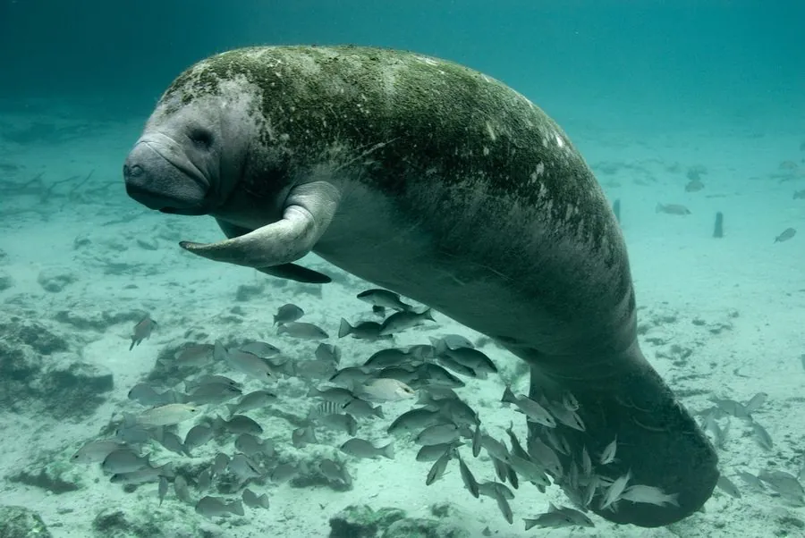

哺乳动物 · 动物界
西印度海牛 Trichechus manatus

生活在加勒比海、墨西哥湾和南美东北部沿海的温和海牛，以海草为食，因船只撞击和栖息地退化被列为易危。
- 分类
- 门脊索动物门纲哺乳纲目海牛目科海牛科属海牛属
- 栖息环境
- 河口、潟湖、浅海海草床与温暖沿岸水域
- 地理分布
- 美国佛罗里达、加勒比海、墨西哥湾及南美东北部沿海
- 保护级别
- IUCN 易危（VU）；非中国分布物种
物种志
西印度海牛体长 3–4 米，体重 400–550 kg，雌性略大。它的身体呈纺锤形，皮肤灰褐色、粗糙，前肢特化为鳍状，没有后肢，尾鳍宽大呈桨状；头部小而圆，嘴唇厚实，嘴角有刚毛，适合抓取水草。
西印度海牛分布于美国佛罗里达、加勒比海岛屿、墨西哥湾和中南美洲东北部沿海，栖息在河口、潟湖和浅海海草床。它是完全植食的动物，每天可吃掉相当于体重 10% 的海草，进食时用鳍足把食物送入口中。雌性妊娠期约 12–14 个月，每胎 1 仔，寿命可达 40–60 年。由于船只撞击、渔网缠绕和海岸开发，西印度海牛数量下降，被列为易危，佛罗里达种群受到重点保护。
形态与习性
- 食性海草等水生植物
- 体长3–4 m
- 体重400–550 kg
- 寿命40–60 年
- 繁殖妊娠约 12–14 个月，每胎 1 仔
- 食量每天约体重的 10%
趣味知识
- 西印度海牛是纯粹的植食动物，每天吃掉约体重 10% 的海草。
- 它没有后肢，前肢变成鳍状，尾巴宽大如桨。
- 船只撞击是佛罗里达海牛最主要的死亡原因之一。